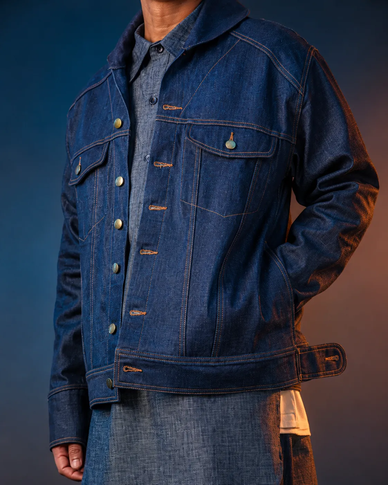
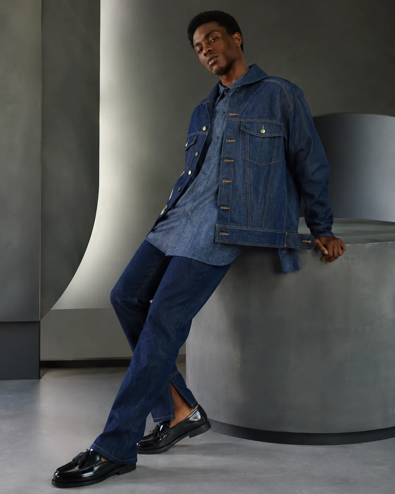
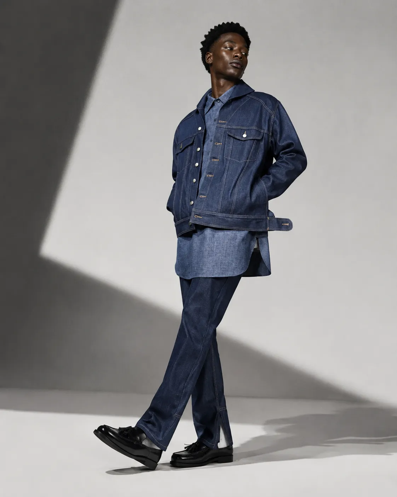
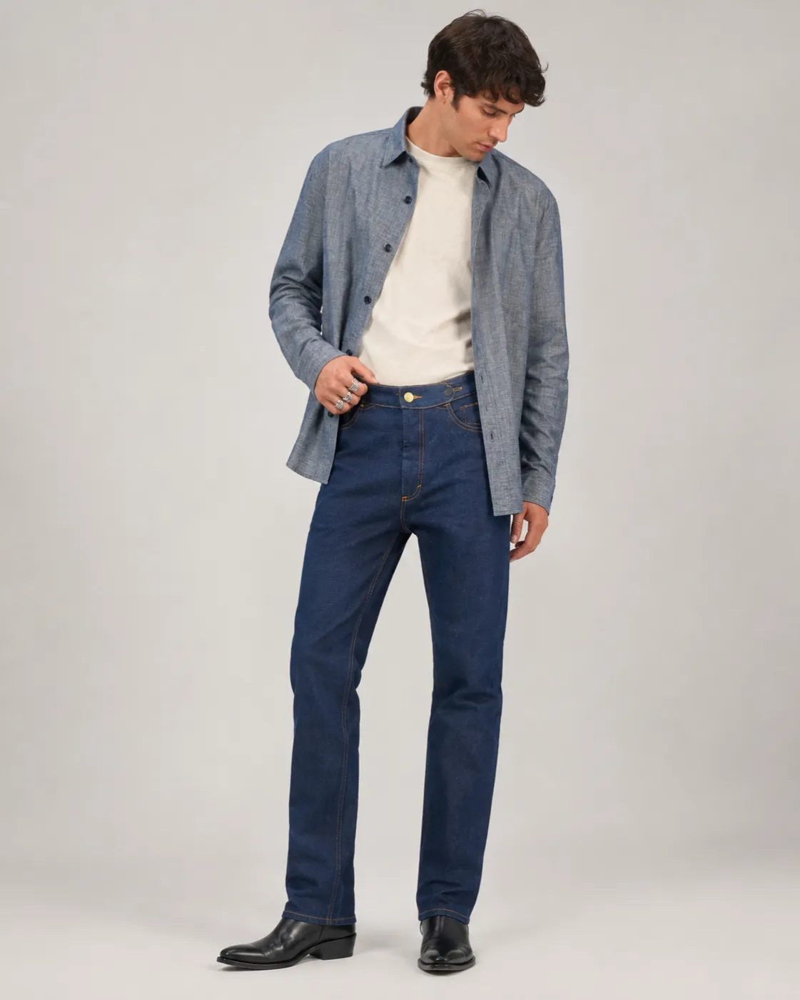
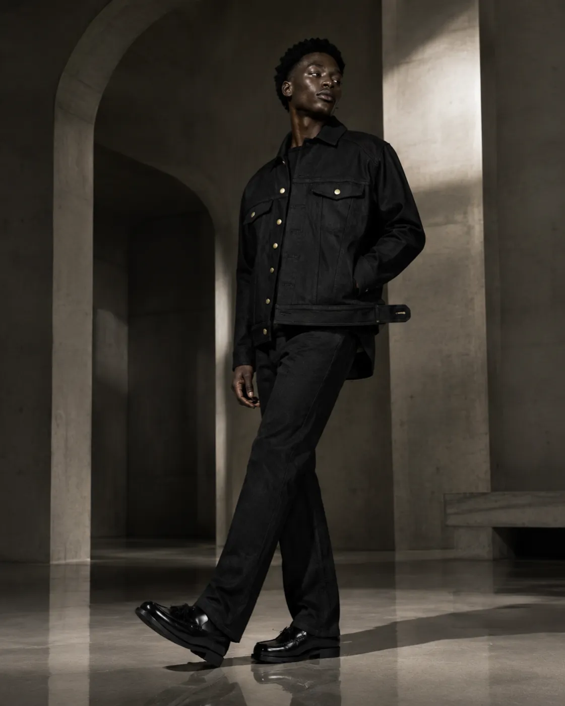

Fashion as a language.
A house built in a garage on Alameda. Denim cut for the way a body actually moves through a day. Chambray softened by the sun. Wool that holds a crease through a wedding and a wake. Nothing loud. Nothing new for the sake of new. Only the pieces we would still wear in ten years.
Four bodies of work. One quiet argument for how a wardrobe should be built.

Eight looks. Photographed in a rented storefront on Broadway, mid-August, in the last of the good light.
The uniform, worked out over ten years.
We keep coming back to the same problem: what does a person actually put on before the world starts asking anything of them? This look answers with three pieces — a pullover long enough to move in, a jean jacket cut close through the shoulder, and a straight-leg jean that holds its line by the time you sit down to lunch.
The same three pieces, cut in black. Shot against concrete, late in the day.
Cut for the way a body actually stands.
The jean jacket began as a factory sample we couldn't stop wearing. Three revisions later it is a garment that reads formal from across the room and easy from inside it. Shown here in black, over the button down — the piece we've made in some form every year since 2017.

On the second fitting
Second fitting, third time this week. R. holds the jacket up to the door light, thumbs a hem, doesn't like it. We take it back to the bench. Everything we make ends up here at least twice.
The pattern is right. The shoulder is not. We shave a quarter-inch and pin it again.
The pages we didn't finish writing. Kept anyway.
A record of the room the clothes were made in.
The Journal is not a blog. It's a set of pages we tear out of the studio diary each week — a fitting, a bad idea, a note taped over another note. We publish them the way we find them.
Four conversations, over nine years, with people who asked good questions.